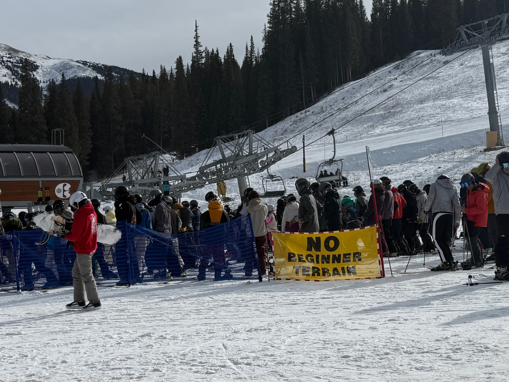
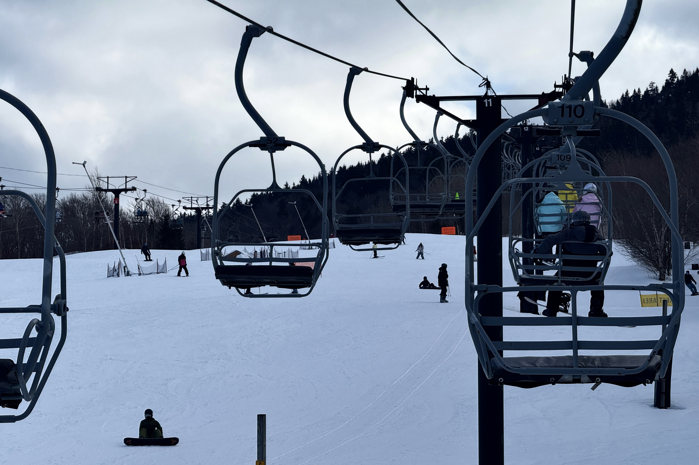
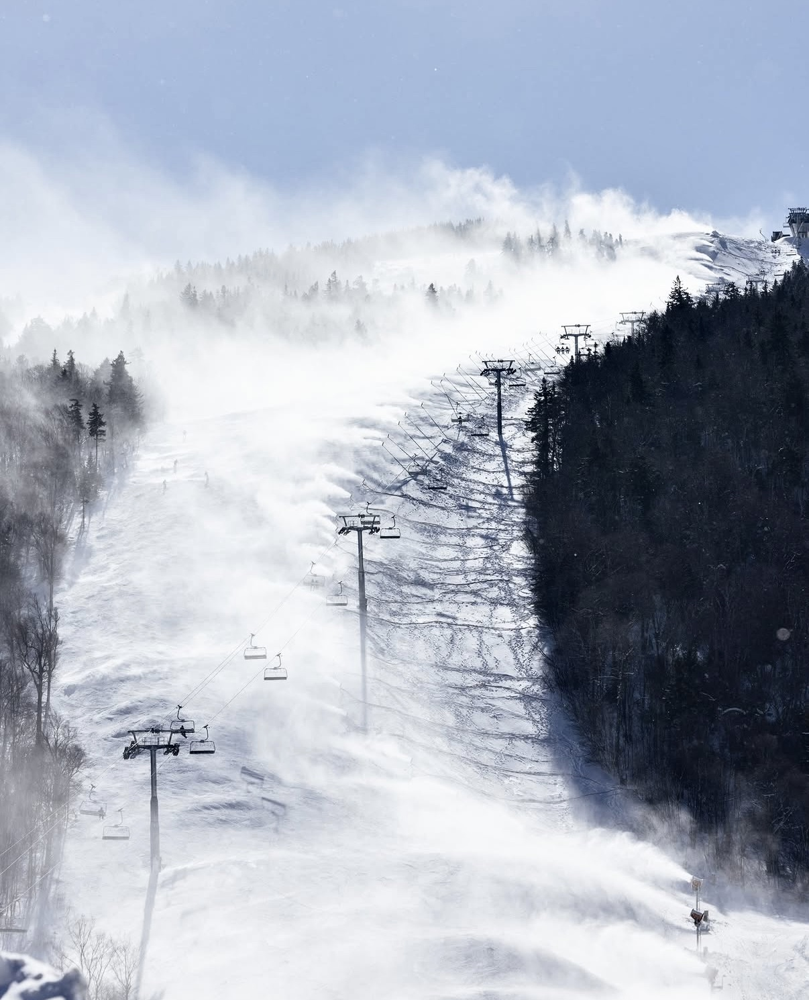

The Snow Still Falls, But the Ski Economy Is Starting to Shift
As winters grow less predictable, ski resorts, workers, and travelers across the United States are being forced to adjust.
Ski 1987 Video:
https://youtu.be/3Ts4Zb-TxXk
(This is a re-edit, short version of BBC Archive work, to show the old days of the ski industry before the major impact of climate change.)
Steamboat, Colo., Dec. 18, 2025. Skiers at Steamboat Resort. (Photo by Yao (Monika) Xiao)
When the Season Starts Without Snow
Nov. 29, 2025, is the third day of Thanksgiving break. It was a busy day for ski patrol at Steamboat Ski Resort, located in Steamboat Springs, Colorado. The High Noon run at Steamboat was packed with skiers, from speedsters to those who had never skied an intermediate trail before. For those whose skill level is below intermediate, the limited terrain left them with no beginner-friendly options amid an early-season snow drought.
Colorado is one of the most popular ski destinations in the United States. A group of 23-year-old skiers, Charlie He and his friends, traveled from New York. They booked Thanksgiving and Christmas trips to Colorado a month in advance, along with ski-in-and-out hotels, making the trip a considerable expense. A longtime skiing enthusiast, Charlie said the excellent snow conditions and experience he had at Steamboat last year led him to plan another early-season trip. However, the snow conditions this season caught him off guard.
“I didn’t expect that only one run would be open,” he said. “If I had known this would happen, I wouldn’t have chosen to come to Colorado.”
A Warmer Winter Is Cutting into the West Coast Ski Season
Climate change and global warming have been driving discussions in recent years, causing snowfall at U.S. ski areas to generally decline for three decades. Now, it affects the ski industry in a predictable but unprecedented way. Colorado’s average temperature from November to December in 2025 was one of its warmest, driest winters on record. December 2025 ranked as the second warmest on record with 42.3°F, about 10 degrees higher than normal.
Data from National Weather Service, 2026
These high temperatures are a bad hit for the ski industry, especially for the early season. Thanksgiving is the traditional opening date for large-size ski resorts, but only 11 percent of the terrain at Western ski areas were open.
Skiers Reroute as East Overtakes West 25/26

Copper Mountain Ski Resort, CO., November 2025. Skiers and snowboarders gather at the base and no beginner terrain available. (Photo by Yao (Monika) Xiao)
Charlie He's friend Kasper Li, after finding the only intermediate slopes available on Steamboat too difficult and being bumped into by another skier. He ultimately called the ski patrol back to his original spot. Many other beginners like Li struggled downhill and eventually sought help from the ski patrol. The ski resort had a banner at the lowest chairlift that read “No Beginner Terrain,” but for destination skiers, not taking that chairlift meant changing their plans.
After careful consideration, Charlie and his companions cancelled off their planned Christmas trip. Being from New York, they felt that East Coast ski resorts were experiencing a much better season than usual.
In previous years, the East Coast’s snow conditions were typically less favorable compared to West Coast ski resorts, because the East Coast is considered more icy than the West Coast’s powder snow. This season, unstable snow conditions gave East Coast resorts an unexpected advantage.
Kevin Ross, manager of Basin Sports near Killington ski resort said, “Most different this season is we had a more normal winter, like it used to be, where it was very snowy and cold the whole time.”
Early 25/26 ski season snowfall shows a clear divergence, with West Steamboat experiencing below-average accumulation, while East Killington benefited from frequent storm systems and above-average snowfall.
Ross mentioned, “I’ve noticed more people, from Southern Midwestern States coming here that would normally go to Colorado, like people from Texas, Oklahoma or Alabama.” This season’s snow is pushing more skiers to rethink where they go, with many choosing the East over the West.
A Busier Season for Instructors on the East Coast

Killington, Vt., February 2026. Skiers and snowboarders gather at the Snow Shed beginner area at Killington Resort. (Photo by Yao (Monika) Xiao)
John Hobbs, a 54-year-old part-time ski instructor in Killington, has been in the industry for three decades. He also used to run an organization that certifies coaches and instructors on the East Coast. Skiing has always been a big part of his life. Currently, he works as a plumber; in the winter, he usually only works two days a week and as a ski instructor four days a week. In the summer, he goes back to full-time plumbing.
Despite early equipment issues, stronger snowfall this season increased demand for lessons and extended instructors’ work hours. Hobbs said his workload this season is significantly higher than in previous years.
“I’ve definitely had more work this year than I’ve had in the past,” he said. “Having good snow conditions is helpful, with the West Coast not having great conditions, I think that’s helped us a lot too.” Hobbs believes this is not only due to the better snow conditions in his area, but also related to the poor snow conditions in some ski areas on the West Coast, which has led some skiers to switch to the East Coast.
When discussing the impact of unstable snow conditions on his work, Hobbs said that when only a few runs are open early in the season, that, “there’s definitely less traffic from the public, less business.” For ski resorts, that decline in activity can quickly affect operations. To compensate, Hobbs said Killington relies heavily on large-scale snowmaking across multiple trails, especially at higher elevations, where conditions can turn icy without fresh snowfall.
Snowmaking Keeps Resorts Open at a Cost
Even large ski resorts like Killington rely on artificial snowmaking to operate at the beginning of the season. Hobbs believes this is not entirely unexpected, as being able to open some runs in November is considered a good situation. Compared to some surrounding ski resorts that may not be open at all, being able to ski means the ski season has begun.

Killington, Vt., 2026. Snow guns cover the Superstar trail at Killington Resort during early-season snowmaking.
Killington’s official announcement says, “As soon as Mother Nature graces us with cold temperatures, our snowmaking team jumps into action and takes every opportunity to make snow to get us open.” It seems like large East Coast ski resorts, such as Killington, are getting used to it. They ususally operate snow machines throughout the year since they often face rain-on-snow and melting events mid-winter. But the cost of snowmaking is the highest it’s ever been, approaching $3.5 million per season. It is still a huge amount of spending on operating a ski resort if it still isn't as good as predicted.
Snowmaking is no longer a backup option but a necessary and costly part of keeping the ski season alive for resorts. The cost of staying open is rising, which also creates a gap between resorts that can afford to adapt and those that cannot. However, questions remain about whether this approach can be sustained long-term.
Depending on the type, a snowmaker consumes about 405 liters of water per minute. That is comparable to 40 household taps fully open. Even though public awareness of the environmental impact of artificial snow is growing and more efficient snowmaking machines are developing, demand for artificial snow is set to rise. To maintain short-term stability might sacrifice sustainability too, but there’s no other alternatives.
Killington owns mature snow-making infrastructure, which often enables it to maintain relatively good snow conditions in the early season. However, from a broader industry perspective, climate change is gradually altering the operations of the skiing industry.
Although large ski resorts have certain mitigation capabilities, smaller and lower elevation ski resorts are more vulnerable to unstable snow conditions. Pats Peak (1,460 ft) and Wachusett (2,006 ft), near the greater Boston area, as well as Blue mountain in the Poconos Mountains (1,407 ft), located in Pennsylvania, are highly dependent on natural snowfall, and snowmaking will be easily impacted by temperature rises.
According to data from the National Ski Areas Association, from 1991 to 2022, reported natural snowfall at U.S. ski areas declined at an average annual decrease of about 0.27%.
At the same time, the ski season is gradually shortening, and peak snowfall is occurring earlier. Research shows that even adding snowmaking techniques in the past half century, the U.S. ski season has shortened by an average of about 5 days. Senior Associate at Lynker Technologies, Cameron Wobus, has analyzed the timing and impact of ski opening dates. By 2050, his team estimates the end of the season could shorten by more than 20 days.
Ski Tourism Slows, the Economy Feels It
The global ski market was valued at $16.12 billion in 2025. The ski industry is a significant employer in winter tourism regions, with an estimated 76,719 people employed by U.S. ski and snowboard resorts as of 2026. The broader Snowsports industry, including ancillary spending, has historically been estimated to support as many as 695,000 jobs in the U.S.
In such a large-scale industry, even a few days' change in the snow season can have a much greater impact than expected. Focus on part-time or seasonal workers may be faced with shorter working periods depending on the snow condition.
“Usually what happens is if it’s winter just not panning out, then people will be laid off earlier, like seasonal people. We won’t keep them quite as long,” Ross said, “But if we know March is going to be really good and if April will be good, then we keep people much longer.”
That kind of short-term variability turns into longer-term economic shifts beyond the resort. Environmental economist Dr. Nejem Raheem stated that these short-term changes have ripple effects on local and regional economies.
The uncertainty of snow conditions has changed the behavior of tourists. It caused decreased satisfaction and loyalty, a reduced number of skiers, shortened stay time, and even for some ski resorts in Colorado, tourists have chosen other skiing destinations. Vail Resorts reported a $53.2 million decrease in resort net revenue and an 11.9% decrease in skier visits compared to year 2025.
Cooper Mountain, Colo., December 2025. Patchy snow covers alpine terrain along a mountain road. (Photo by Yao (Monika) Xiao)
“What happens is because you have this large, complex seasonal economy that’s dependent on it; many people make the decision to go to these places ahead of time, and they can’t really change their plans very easily,” Raheem said. He also believes that while the instability of a single ski season's impact on tourism is fluctuant. In the long-term, this persistent climate instability will disrupt the current balance of the ski economy.
With the slowdown of skiing tourism in the 25/26 ski season, the economies and ecological environments of many regions that rely on this industry have also been affected, especially for Colorado this year. Colorado ski-related categories are facing crucial declines in 2026, with ski school revenue down nearly 15%, dining revenue down almost 16%, and retail and rental revenue down about 6%. To cope with these changes, ski resorts have begun to rely on snowmaking to extend the duration of the ski season as much as possible, but reduced revenue further constrains their ability to maintain consistent snow conditions, creating additional operational pressure.
The chief executive of Vail Resorts, Rob Katz, told investors in January, “We experienced one of the worst early season snowfalls in the Western U.S. in over 30 years.” After this, they are trying to find solutions to climate change on the operational side, with their commitment to zero net carbon footprint by 2030. At the same time, Vail started the Snowmaking Enhancement Project to add 421 new snow guns and increase investment to maintain the consistent early-season snow conditions.
“If the changes are not permanent, the disruption will be even worse, because it’ll become like a rolling, chaotic attempt to constantly try to adjust,” Dr. Raheem said. He predicts that if this climate unpredictability persists, ski resorts will be unable to adapt and adjust in time. Decades later, this could lead to operational difficulties or even closures for many smaller ski resorts in the United States, especially those in lower latitudes, thereby affecting those who depend on the industry for their livelihoods.
A Passion Skiers Can’t Let Go Of
Killington, Vt., February 2026. Wind blows across the exposed summit at Killington Resort. (Photo by Yao (Monika) Xiao)
Even in these circumstances, people who love skiing and their profession won’t easily give it up.
Charlie He said, “I believe skiing is the passion of my life. No matter what happens, I guess the only way for me is to make more money and chase the best snow.”
“There is always a second doubt, but I’ve stuck with it for 36 years already, so I doubt I’m leaving,” said Hobbs. He maintains a certain optimism regarding the long-term uncertainties brought about by climate change in the ski industry. Hobbs says he certainly thinks about the future, but he won’t leave the industry because of current changes.
For Hobbs, who has spent more than half his life working in the ski industry, skiing has always been something worth persisting in. Even as winters become increasingly unpredictable, he still believes the ski season will come and still chooses to return to the mountains every year.
But for the entire ski industry, changes are already beginning to appear. As snowfall becomes more unpredictable, ski resorts, tourists, and local economies that depend on the ski season are all being forced to adapt to a new reality.
The founder of Patagonia, Yvon Chouinard once said,
“The climate crisis is the biggest threat to the places we love.”
Snow hasn’t disappeared, but the ski tourism economy built around it is entering a more uncertain era that not all participants will survive.